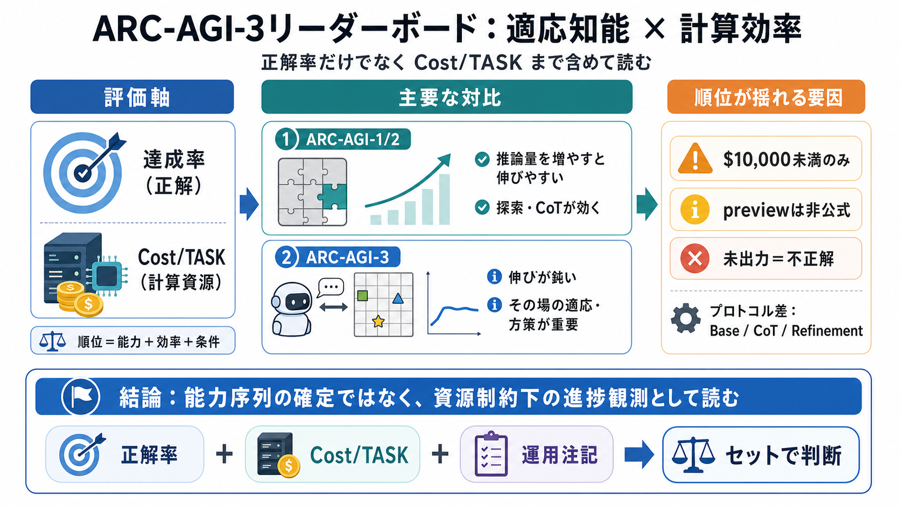

cover
02 / 14
適応×効率の競争
ARC-AGI-3
読み解き
ARC-AGI-3リーダーボードを、「正解率」だけでなく「Cost/TASK（計算効率）」まで含めて読むと、競争構造が見えてきます。
対象
ARC-AGI-1/2/3
見どころ
達成率 × Cost/TASK
中心仮説
ARC-AGI-3は伸びにくい
problem
03 / 14
なぜ序列が難しい？
“強さ”単独では
不十分
ARC-AGI-1/2/3は、同じ「解けたか」でも計算コストが変わり得ます。したがって順位は「能力」だけでなく「効率・運用条件」も反映します。
評価の軸
達成率（正解）
plus：Cost/TASK（計算資源）
読み替え
“条件下の実力”のスナップショット
絶対的な能力序列ではない
metaphor
04 / 14
速い＝賢い？
効率は
戦略
Cost/TASKが低いほど、同程度の達成に必要な計算が少ない可能性があります。つまり「推論を増やすか」「より良い探索・統合で済ませるか」が勝敗に効きます。
できること
同じ正解率をより安く出す
探索量・反復・プロトコルの最適化
読み方の注意
Cost/TASK＝知能の本質ではない
評価条件でもコストは変動
evidence
05 / 14
リンクしているもの
達成率は
コスト
と結びつく
データ説明では「コストあたりのタスクとパフォーマンスの関係」が重要とされています。結果として、強いモデルでも高コストだと相対的に不利になり得ます。
競争構造
正解率だけでなく費用も順位形成
研究の動機
高性能化＋資源制約での実用性
distinction
06 / 14
推論レベルが効く？
ARC-AGI-1/2は
伸びやすい
同一ベースモデルでも推論レベル（Low/Medium/High/xHigh/Max等）を上げると、ARC-AGI-1/2のスコアが伸びる傾向が見られます。
兆候
Low → Maxで上昇
ARC-AGI-1/2
解釈
追加推論（CoT等）が効く
含意
初期の課題群は探索で勝ちやすい
distinction
07 / 14
天井が低い？
ARC-AGI-3は
伸びが鈍い
上位行でもARC-AGI-3が0.0%〜数%台で止まるケースが見受けられます（例：30.2%、0.3%、1.1%など）。思考時間を増やすだけでは突破しにくい可能性があります。
観測
上位でも低い割合が残る
示唆
単純なCoT増量では足りない要素がある
方策・探索・メモリ・環境モデルなど
architecture
08 / 14
評価設計の差
AGI-3は
対話的適応
提示文ではARC-AGI-1/2を受動的な流体知能（passive fluid intelligence）とし、ARC-AGI-3は未知の対話的環境にその場で適応するAIエージェントを想定します。
ARC-AGI-1/2
受動（passive）
流体知能寄り
ARC-AGI-3
対話（interactive）
その場で適応
結果として
探索・方策が効きやすい
comparison
09 / 14
方式の混在
CoT/Refinementが
混ざる
リーダーボードにはBase LLM / CoT / Refinementなど、推論方式が混在していると説明されています。スコア差はモデル能力だけでなくプロトコル差も反映し得ます。
例
CoT（Chain-of-Thought）
思考過程の推論を増やす
例
Refinement
出力の反復改善
evidence
10 / 14
順位が揺れる要因
比較の
制約
を織り込む
「Only systems which required less than $10,000 to run are shown」「previewは非公式」「未出力は不正解扱い」などの注記があります。よって順位は将来変動・条件依存のリスクを含みます。
掲載フィルタ
$10,000未満のみ
高コスト勢が欠落
プレビュー
previewは非公式
検証前提が不確実
運用上の扱い
未出力＝不正解
堅牢性も成績に影響
process
11 / 14
意思決定に使う
“何を”読むべき？
このデータは「資源制約下でどの推論・実装がどれだけ進んでいるか」を読むのに向きます。逆に、究極的な知能の優劣を確定する材料としては不足があります。
読む
性能×効率×検証状況
現時点の実用寄りの比較
保留する
“なぜ伸びないか”の確定
評価条件や手順が不足
不足しがちな情報：各方式のCoT量、探索戦略、反復回数、失敗時挙動、そしてARC-AGI-3で0.0〜数%台に止まる理由の粒度。
enumeration
12 / 14
私の観点（要約）
Strategic
→
Risk
ランキングは性能競争だけでなく、戦略・技術・運用・リスクを同時に映す“観測窓”になります。
i. Strategic（戦略）
高正解率＋低コストで設計が勝つ
ii. Technological（技術）
CoT/Refinementなど方式差がスコアへ反映
iii. Operational（運用）
未出力＝不正解で堅牢性が重要
iv. Scientific（科学）
適応（AGI-3）を測る設計は有効かも
v. Risk（リスク）
preview・掲載フィルタ・条件依存で順位変動
vi. Educational（理解）
効率指標の重要性は学べる
closing
13 / 14
結論（短く）
効率込み
で理解する
ARC-AGI-3は伸びが鈍く見え、単純な“思考時間の増加”だけでは足りない可能性が示唆されます。とはいえ、$10,000フィルタやpreview、未出力の扱いなど制約があるため、「能力序列の確定」より「資源制約下の進捗観測」として読むのが妥当です。
次に欲しい情報
同一条件での比較可能性（探索・反復・失敗時挙動）
あなたへの示唆
“正解率＋Cost/TASK＋運用注記”をセットで判断する
REFERENCES
14 / 14
References
No references found